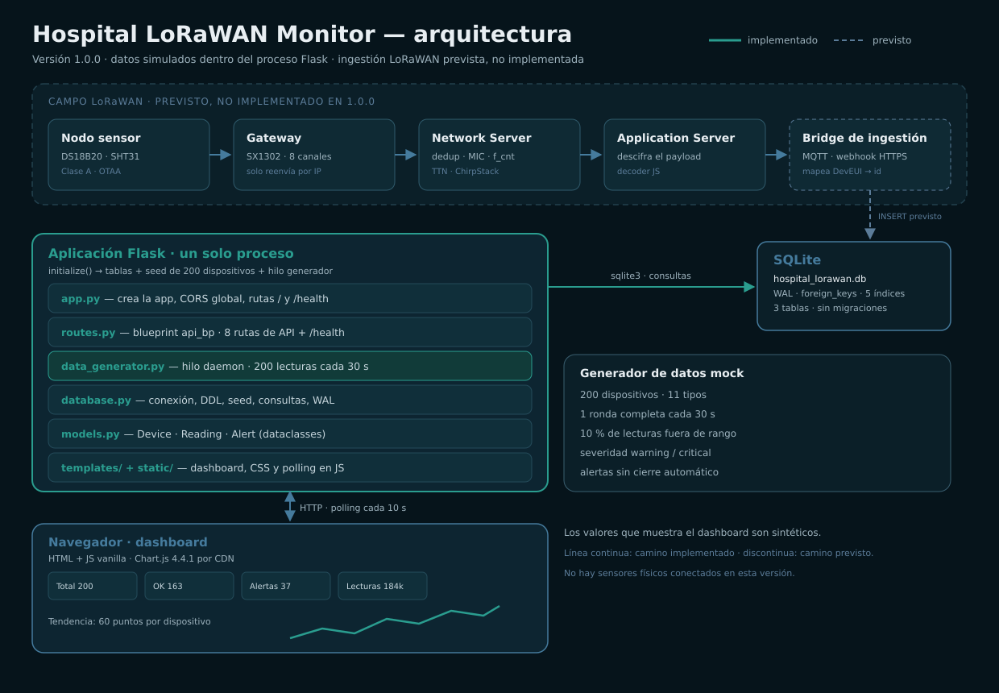
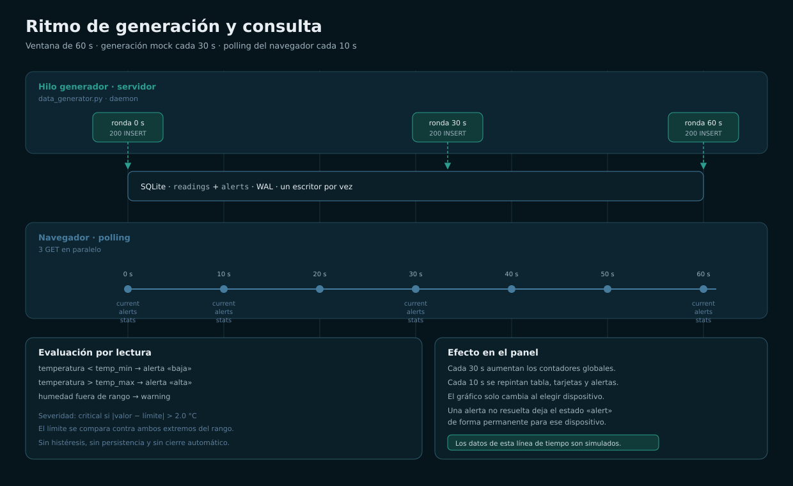
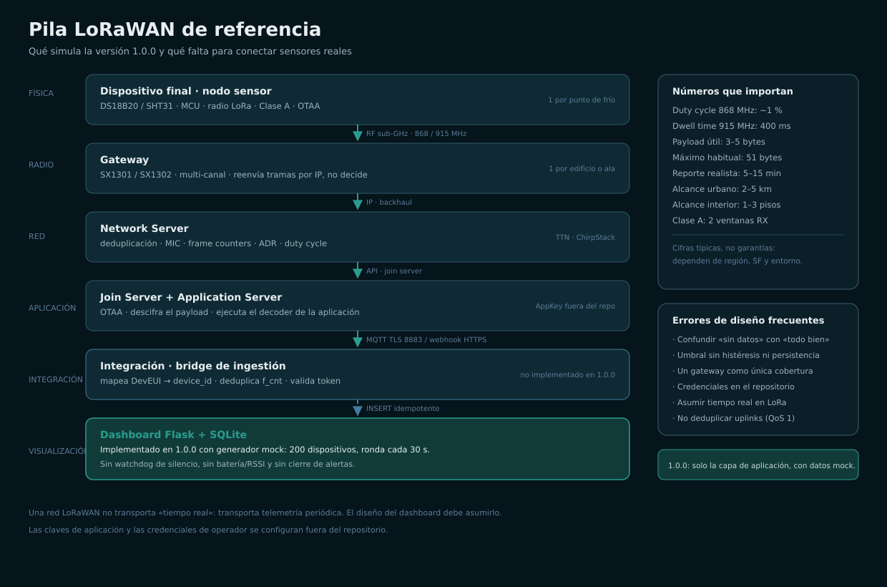

200 sensores.
Un dashboard.
Temperatura y humedad de un hospital, simuladas y visualizadas en un dashboard Flask con SQLite.

Qué es y por qué existe
Panel de monitoreo de cadena de frío hospitalaria construido con Flask y SQLite. Muestra temperatura y humedad de 200 puntos simulados, organizados en 11 tipos de dispositivo, con alertas por umbral, histórico y gráficos actualizados cada diez segundos. Está pensado para equipos de informática hospitalaria y desarrolladores que necesitan evaluar la interfaz, el modelo de datos y el flujo de alertas antes de conectar hardware real.
Su valor está en separar la aplicación de la adquisición: el README documenta el camino LoRaWAN completo —gateway, network server y MQTT o HTTP— como diseño, pero la versión 1.0.0 solo genera datos gaussianos. Es una demostración funcional y honesta de la capa de visualización, no un sistema clínico: las alertas no se resuelven, no hay autenticación ni retención de datos y la evaluación no incorpora histéresis.
Documentación preservada
El README original, completo y en su contexto.
Dashboard de monitoreo de temperatura y humedad para cadena de frío hospitalaria, con diseño de ingestión LoRaWAN y simulación de 200 sensores.
Estado de los datos — leer primero. La versión 1.0.0 de este repositorio no se conecta a ningún sensor físico. Todas las lecturas y alertas provienen de un generador sintético (
data_generator.py) que corre dentro del proceso Flask. El camino LoRaWAN real (gateway → servidor de red → MQTT/HTTP → base de datos) está documentado como diseño, no implementado. Ningún número del dashboard sirve para decisiones clínicas, regulatorias ni de mantenimiento.
Tabla de contenidos
- Qué es este proyecto
- Datos mock vs. datos reales
- El problema: cadena de frío
- Principio físico y de red
- Arquitectura
- Stack y requisitos
- Instalación
- Ejecución
- Uso del dashboard
- Modelo de datos
- API REST
- Flujo de datos simulado
- Flujo LoRaWAN real (diseño)
- Simulación y escenarios
- Despliegue
- Seguridad
- Límites conocidos
- Rendimiento y capacidad
- Mantenimiento y respaldo
- Estructura del repositorio
- Pruebas y verificación
- Roadmap
- Preguntas frecuentes
- Licencia y atribuciones
Qué es este proyecto
Hospital LoRaWAN Monitor es una aplicación web monolítica que muestra en una pantalla el estado térmico y de humedad de hasta 200 puntos de monitoreo de un hospital: vitrinas de farmacia, frigobares de enfermería, refrigeradores de cocina, freezers de −20 °C y −80 °C, cámaras mortuorias, áreas de confort ambiental y termostatos con sonda de salas técnicas.
Está pensado como demostrador y banco de pruebas de una arquitectura de monitoreo IoT para cadena de frío:
- Backend Flask que sirve una página HTML y una API REST JSON.
- SQLite como almacén embebido, sin servidor de base de datos.
- Generador mock en un hilo daemon que produce 200 lecturas cada 30 s y evalúa límites para crear alertas.
- Frontend sin build: HTML + CSS + JavaScript vanilla, Chart.js y Font Awesome por CDN.
- Diseño de integración LoRaWAN para TTN y ChirpStack, con esquema de
payload, mapeo
DevEUI → device_id, idempotencia y duty cycle.
Lo que no es: no controla compresores, no es producto sanitario certificado, no reemplaza registradores validados y no implementa autenticación, autorización ni auditoría firmada.
| Capacidad | Detalle |
|---|---|
| Inventario | 200 sensores en 11 tipos con límites propios |
| Lecturas | Temperatura siempre; humedad solo en ambiental |
| Alertas | Evaluación por límites, severidad warning / critical |
| Visualización | 5 tarjetas, gráfico de 60 puntos, tabla de 200 filas, panel de 20 alertas, histórico de 100 lecturas |
| Filtros | Tipo, texto (nombre/ubicación) y estado (todos/OK/alerta) |
| Actualización | Polling cada 10 s; generación cada 30 s |
| API | 10 rutas JSON con envoltura {success, data, count} |
| Persistencia | hospital_lorawan.db con WAL |
| Operación | Un proceso, sin dependencias nativas, arranque en un comando |
Datos mock vs. datos reales
| Aspecto | Modo simulación (lo que corre) | Modo producción (diseño) |
|---|---|---|
| Origen | random.gauss() en data_generator.py |
Sensor físico → gateway → servidor de red |
| Frecuencia | Ronda de 200 filas cada 30 s | 5–15 min por nodo según duty cycle |
| Identidad | devices.id autoincremental |
DevEUI + device_id interno |
| Transporte | Ninguno: INSERT directo en SQLite | LoRaWAN RF + MQTT o webhook HTTPS |
| Humedad | Solo 30 dispositivos ambiental |
Según sensor (SHT30/31, DHT22) |
| Fuera de rango | 10 % de probabilidad por lectura | Falla real o apertura de puerta |
| Alertas | Se crean y nunca se resuelven solas | Acuse y cierre por operador |
| Volumen | ~576 000 lecturas/día | ~19 200/día con 200 nodos cada 15 min |
Regla práctica: si el dashboard se inicia con python app.py, los datos son
mock. Si se conecta un bridge MQTT hay que detener el generador; de lo
contrario las lecturas sintéticas contaminan el histórico y las métricas de
disponibilidad.
El generador se reconoce en los logs:
[INFO] Generador de datos iniciado. Intervalo: 30s
[INFO] Generadas 200 lecturas para 200 dispositivos.
Para desactivarlo hay que dejar de llamar a start_generator() en
initialize() (ver docs/developer.md). Este repositorio
no aplica ese cambio: conserva la versión 1.0.0 tal como fue publicada.
El problema: cadena de frío
| Área | Rango típico | Qué se conserva | Consecuencia de una excursión |
|---|---|---|---|
| Farmacia / vitrinas | 2 – 8 °C | Vacunas, insulinas, biológicos | Pérdida de potencia, dosis descartadas |
| Banco de sangre | 2 – 8 °C | Hemoderivados | Producto no apto para transfusión |
| Laboratorio | 2 – 8 °C | Reactivos, calibradores | Resultados inválidos |
| Cocina | 2 – 8 °C y −20 °C | Alimentos perecederos | Riesgo bromatológico |
| Biobanco | −80 °C | Tejidos, ADN, células madre | Degradación irreversible |
| Morgue | 2 – 8 °C | Conservación de cuerpos | Problema sanitario y legal |
| Áreas de pacientes | 20 – 24 °C, 30 – 60 % HR | Confort, control de infecciones | Malestar, condensación, hongos |
Puntos críticos del problema operativo:
- Escala: 200 puntos en varios pisos; la ronda manual consume horas.
- Latencia: una puerta mal cerrada a las 03:00 se detecta a las 08:00.
- Evidencia: la normativa exige registro continuo, no una planilla por turno.
- Falsas alarmas: umbrales estrechos entrenan al personal a ignorar alarmas.
- Costo: perder un lote de vacunas o un biobanco cuesta órdenes de magnitud más que desplegar los sensores.
La arquitectura que modela el proyecto: un nodo autónomo por punto de conservación, radio de bajo consumo hacia un gateway, servidor de red que desacopla radio y aplicación, y un dashboard con alertas priorizadas. La versión 1.0.0 implementa solo la capa de aplicación y simula la de sensado.
Principio físico y de red
Medición
- PT100/PT1000 y termopares: usados en sondas de equipos médicos y freezers; alta precisión, requieren acondicionamiento analógico.
- DS18B20: digital 1-Wire, −55 a +125 °C, ±0.5 °C típico; común en sondas de penetración.
- SHT30/SHT31: I²C, ±0.3 °C y ±2 % HR; ideal para monitoreo ambiental.
- DHT22: bajo costo, ±0.5 °C, más lento y menos estable.
La incertidumbre importa: con límite 8.0 °C y sensor de ±0.5 °C, una lectura de 8.3 °C puede ser un equipo a 7.9 °C. Un sistema serio define umbral + histéresis + tiempo de persistencia ("alerta si supera 8.0 °C en 3 lecturas consecutivas"). La versión 1.0.0 evalúa una lectura individual, sin histéresis ni persistencia.
Radio LoRa
LoRa es la capa física: espectro ensanchado con chirps en bandas ISM sub-GHz (868 MHz Europa, 915 MHz América, 433 MHz Asia). El factor de ensanchamiento (SF7–SF12) intercambia velocidad por sensibilidad: SF12 llega más lejos y penetra mejor, pero permite pocos bytes por segundo y ocupa más tiempo de aire. Consecuencia: el enlace no es apto para streaming. Un nodo envía un puñado de bytes cada varios minutos; el dashboard recibe telemetría periódica, no "tiempo real" web.
LoRaWAN
- End device: sensor + MCU + radio. Clase A por defecto (dos ventanas de recepción tras cada uplink); clases B y C agregan escucha a costa de batería.
- Gateway: concentrador multi-canal (SX1301/SX1302) que solo reenvía tramas por IP; no decide nada.
- Network Server: deduplica uplinks de varios gateways, valida MIC, gestiona frame counters, ADR y join.
- Join/Application Server: OTAA (recomendado) o ABP; descifra el payload y lo entrega por MQTT, HTTP o gRPC.
- Duty cycle: en 868 MHz la sub-banda por defecto limita a ~1 % de tiempo de aire; en 915 MHz hay dwell time de 400 ms. Eso fija la frecuencia realista.
- Payload: 51 bytes de aplicación como máximo habitual; con codificación binaria (temperatura en centésimas, humedad en un byte) un reporte cabe en 3–5 bytes.
Cadena completa:
[Sensor] → [MCU] → [Radio LoRa] ⇢⇢ RF ⇢⇢ [Gateway] → IP → [Network Server]
→ [Application Server] → MQTT/HTTPS → [Bridge] → [SQLite] → [Dashboard]
Cada flecha es un dominio de fallo distinto. Un dashboard que solo mira la última fila no distingue "el equipo está bien" de "el nodo dejó de transmitir". Producción necesita un watchdog de silencio (alerta si un dispositivo lleva N minutos sin lecturas) y batería/RSSI. Nada de eso existe en 1.0.0: el generador garantiza datos frescos para los 200 dispositivos.
Arquitectura

| Componente | Archivo | Responsabilidad |
|---|---|---|
| Punto de entrada | app.py |
Crea Flask, habilita CORS, carga config.py, inicializa BD, arranca generador, registra blueprint, sirve / y /health |
| Configuración | config.py |
Rangos por tipo, cantidades, intervalos, probabilidad de falla, host/puerto |
| Dominio | models.py |
Dataclasses Device, Reading, Alert con to_dict() |
| Persistencia | database.py |
Conexión SQLite (WAL + FK), DDL, índices, seed, helpers |
| Simulación | data_generator.py |
Hilo daemon, generación gaussiana, valores fuera de rango, inserción y alertas |
| API | routes.py |
Blueprint api_bp con rutas JSON |
| Vista | templates/dashboard.html |
Estructura del panel (Jinja2 sin variables) |
| Cliente | static/js/dashboard.js |
Polling, renderizado, filtros, Chart.js |
| Estilo | static/css/dashboard.css |
Tema claro, tarjetas, tablas, animaciones, responsive |
Flujo de una lectura mock:
initialize()crea tablas y siembra 200 dispositivos.start_generator()lanza unthreading.Thread(daemon=True).- El hilo ejecuta
generate_all_readings()de inmediato y luego cada 30 s. - Por dispositivo genera temperatura (y humedad si aplica).
- Inserta en
readings; si viola un límite, inserta enalerts. - El navegador consulta
/api/readings/current,/api/alertsy/api/statscada 10 s y repinta. - Al seleccionar un dispositivo,
/api/readings/latest/<id>alimenta Chart.js con 60 puntos.
Decisiones visibles:
- Sin ORM: SQL directo con
sqlite3yRow; menos dependencias, sin migraciones automáticas. - Sin build de frontend: CDN para Chart.js y Font Awesome; cero Node.
- Generación en el mismo proceso: simple para demo, problemático con múltiples workers.
- Una conexión por operación: correcto a baja concurrencia, costoso al escalar.
- Timestamps UTC:
CURRENT_TIMESTAMPde SQLite es UTC sin sufijo; el frontend agregaZ. La API no declara zona horaria.
Stack y requisitos
| Capa | Tecnología | Versión | Notas |
|---|---|---|---|
| Lenguaje | Python | 3.10+ | Type hints modernos |
| Web | Flask | >=3.0.0 |
Sin extensions salvo CORS |
| CORS | Flask-CORS | >=4.0.0 |
CORS(app) global, sin allowlist |
| Base de datos | SQLite | 3.x (stdlib) | WAL, FK, índices |
| Plantillas | Jinja2 | con Flask | Plantilla estática |
| Gráficos | Chart.js | 4.4.1 (CDN) | Línea con doble eje Y |
| Iconos | Font Awesome | 6.5.1 (CDN) | Requiere Internet en el cliente |
| WSGI | Flask dev server | — | Producción: Gunicorn + Nginx |
Dependencias de Python (definidas en requirements.txt):
flask>=3.0.0
flask-cors>=4.0.0
Sin dependencias nativas, sin Node, sin base externa: todo cabe en un
directorio y un archivo .db.
Servidor
| Recurso | Mínimo (demo) | Recomendado (piloto) |
|---|---|---|
| CPU | 2 núcleos | 4 núcleos |
| RAM | 1 GB | 4 GB |
| Disco | 500 MB + crecimiento de BD | 20 GB SSD |
| SO | Linux, macOS, WSL2 | Debian 12 / Ubuntu 22.04 / Raspberry Pi OS |
| Python | 3.10 | 3.12 |
| Red | Salida a Internet solo para CDN | Reverse proxy con TLS |
Cliente
Navegador con JavaScript (Chrome 90+, Firefox 88+, Edge 90+, Safari 14+), resolución mínima 1280×720 y acceso a Internet para los CDN. En una red hospitalaria segmentada hay que alojar Chart.js y Font Awesome localmente.
Instalación
Las dependencias están declaradas en requirements.txt. Los comandos se
ejecutan dentro de la carpeta de la versión:
cd versions/hospital-lorawan-dashboard
1. Entorno virtual
python3 -m venv venv
source venv/bin/activate # Linux / macOS
venv\Scripts\activate # Windows (cmd)
venv\Scripts\Activate.ps1 # Windows (PowerShell)
2. Dependencias
python -m pip install --upgrade pip
pip install -r requirements.txt
3. Verificación
python -c "import flask, flask_cors; print(flask.__version__)"
Debe imprimir 3.x. Si falla, el entorno no está activo o pip apunta a otro
intérprete.
Rutas:
config.pycalculaDB_PATHcomoos.path.join(os.path.dirname(os.path.abspath(__file__)), "hospital_lorawan.db"). La base se crea junto a los.py, no en el directorio desde donde se lanza el comando. En un directorio de solo lectura el arranque falla consqlite3.OperationalError: unable to open database file.
4. Estructura mínima resultante
hospital-lorawan-dashboard/
├── venv/ # no versionado
├── app.py
├── config.py
├── database.py
├── data_generator.py
├── models.py
├── routes.py
├── requirements.txt
├── hospital_lorawan.db # se crea al primer arranque
├── templates/dashboard.html
└── static/{css,js}/...
Ejecución
Modo desarrollo
python app.py
Salida esperada (resumida):
[INFO] Iniciando Dashboard de Monitoreo Hospitalario LoRaWAN
[INFO] Paso 1/2: Inicializando base de datos...
[INFO] Tablas de base de datos creadas/verificadas correctamente.
[INFO] Seed completado: 200 dispositivos insertados.
[INFO] Paso 2/2: Arrancando generador de datos LoRaWAN...
[INFO] Thread generador de datos iniciado.
[INFO] Sistema listo. Navega a http://localhost:5000
* Serving Flask app 'app'
* Debug mode: on
Abrir http://localhost:5000.
Ojo con el reloader:
FLASK_DEBUG = Trueactiva el reloader de Werkzeug, que ejecuta el proceso dos veces. El hilo generador arranca en ambos, así que se ven rondas duplicadas en los primeros segundos y logs repetidos. Para demos estables,FLASK_DEBUG = False.
Verificación rápida
curl -s http://localhost:5000/health
# {"service":"Hospital LoRaWAN Dashboard","status":"ok","version":"1.0.0"}
curl -s http://localhost:5000/api/stats | head -c 400
Para detener: Ctrl+C. El hilo es daemon y muere con el proceso;
stop_generator() existe pero no está expuesta por ninguna ruta ni manejador
de señales.
Uso del dashboard

Barra superior
Nombre del sistema, indicador EN VIVO pulsante, hora de la última actualización exitosa y botón de refresco manual.
Tarjetas de resumen
| Tarjeta | Origen | Comentario |
|---|---|---|
| Total Dispositivos | COUNT(*) FROM devices WHERE active=1 |
200 por defecto |
| Dispositivos OK | Conteo en cliente de status === "ok" |
Depende de alertas no resueltas |
| Alertas Activas | COUNT(*) FROM alerts WHERE resolved=0 |
Cuenta alertas, no dispositivos |
| Total Lecturas | COUNT(*) FROM readings |
Crece ~576 000/día |
| Lecturas 24h | timestamp >= datetime('now','-24 hours') |
UTC |
Filtros
- Tipo: lista fija de 11 tipos.
- Buscar: texto libre contra nombre y ubicación.
- Estado: Todos / OK / Alerta, combinable con los anteriores.
Son de cliente: no vuelven a consultar la API; la tabla mantiene las 200 filas en memoria y solo oculta las que no coinciden.
Gráfico de tendencia
- Selección por desplegable o clic en el nombre de un dispositivo.
- Temperatura (°C) en el eje izquierdo y humedad (%HR) en el derecho, oculta si el dispositivo no reporta humedad.
- Últimos 60 puntos (≈30 min con generación cada 30 s).
- No se refresca solo: se redibuja al cambiar de dispositivo o refrescar.
Tabla de dispositivos
Columnas #, Nombre, Tipo, Ubicación, Temperatura, Humedad, Estado, Última
lectura. El color de la temperatura depende de la desviación respecto del punto
medio (verde dentro de rango, ámbar hasta 3 °C, rojo más). Las filas en alerta
llevan fondo rojizo y badge parpadeante.
Panel de alertas y últimas lecturas
Panel con las 20 alertas no resueltas más recientes (mensaje y severidad) y tabla con las 100 lecturas más recientes, con refresco independiente.
Modelo de datos
SQLite, tres tablas y cinco índices. DDL efectivo de
database.create_tables():
CREATE TABLE devices (
id INTEGER PRIMARY KEY AUTOINCREMENT,
device_type TEXT NOT NULL,
name TEXT NOT NULL,
location TEXT,
temp_min REAL NOT NULL,
temp_max REAL NOT NULL,
humidity_min REAL,
humidity_max REAL,
active INTEGER DEFAULT 1
);
CREATE TABLE readings (
id INTEGER PRIMARY KEY AUTOINCREMENT,
device_id INTEGER NOT NULL,
temperature REAL NOT NULL,
humidity REAL,
timestamp DATETIME DEFAULT CURRENT_TIMESTAMP,
FOREIGN KEY (device_id) REFERENCES devices(id)
);
CREATE TABLE alerts (
id INTEGER PRIMARY KEY AUTOINCREMENT,
device_id INTEGER NOT NULL,
reading_id INTEGER,
parameter TEXT NOT NULL,
value REAL NOT NULL,
min_limit REAL,
max_limit REAL,
message TEXT NOT NULL,
severity TEXT DEFAULT 'warning',
resolved INTEGER DEFAULT 0,
created_at DATETIME DEFAULT CURRENT_TIMESTAMP,
FOREIGN KEY (device_id) REFERENCES devices(id)
);
CREATE INDEX idx_readings_device_id ON readings(device_id);
CREATE INDEX idx_readings_timestamp ON readings(timestamp);
CREATE INDEX idx_alerts_device_id ON alerts(device_id);
CREATE INDEX idx_alerts_resolved ON alerts(resolved);
CREATE INDEX idx_alerts_created_at ON alerts(created_at);
Relaciones:
devices 1 ──── N readings
devices 1 ──── N alerts
readings 1 ─── 0..1 alerts (reading_id, enlace lógico sin FK declarada)
PRAGMA foreign_keys=ON se activa en cada conexión, así que device_id sí se
valida; alerts.reading_id no tiene restricción.
| Campo | Semántica |
|---|---|
device_type |
Clave del diccionario DEVICE_TYPES |
temp_min/max |
Límites copiados al sembrar; cambiarlos en config.py no altera filas existentes |
humidity_min/max |
Solo poblados en ambiental |
active |
0 excluye de listados y de la generación |
readings.timestamp |
UTC, YYYY-MM-DD HH:MM:SS, sin sufijo de zona |
alerts.parameter |
temperature o humidity |
alerts.severity |
warning o critical |
alerts.resolved |
0 = activa; ningún código lo pone en 1 |
Invariantes que el código no garantiza: sin CHECK sobre severity,
parameter ni resolved; sin unicidad de nombre; sin borrado en cascada; sin
tabla de migraciones ni PRAGMA user_version.
Volumen
200 filas por ronda, 6 666 por hora, ~576 000 por día, ~4 millones por semana. Medición real:
sqlite3 hospital_lorawan.db \
"SELECT COUNT(*) AS lecturas, datetime(MIN(timestamp)) AS desde,
datetime(MAX(timestamp)) AS hasta FROM readings;"
API REST
Envoltura de éxito: {"success": true, "data": ..., "count": N}. Errores:
{"success": false, "error": "..."} con 404, 415 o 500. Sin versión en la ruta
ni paginación por cursor.
| Método | Ruta | Descripción |
|---|---|---|
| GET | / |
Dashboard HTML |
| GET | /health |
Estado del servicio |
| GET | /api/devices |
Dispositivos activos; device_type, search |
| GET | /api/devices/<id> |
Dispositivo + last_reading; 404 si no existe |
| GET | /api/readings |
Lecturas recientes; limit (100), device_id |
| GET | /api/readings/current |
Última lectura por dispositivo + status |
| GET | /api/readings/latest/<id> |
60 lecturas ascendentes |
| GET | /api/alerts |
Alertas no resueltas; limit (20), device_id |
| GET | /api/stats |
Agregados y distribución por tipo |
| POST | /api/generate |
Fuerza una ronda mock |
curl -s "http://localhost:5000/api/devices?device_type=freezer_80" | python -m json.tool
curl -s "http://localhost:5000/api/devices?search=Laboratorio"
curl -s http://localhost:5000/api/readings/current | python -m json.tool | head -40
curl -s http://localhost:5000/api/readings/latest/141
curl -s -X POST http://localhost:5000/api/generate \
-H "Content-Type: application/json" -d '{}'
# {"count":200,"message":"Generadas 200 lecturas correctamente.","success":true}
curl -s -X POST http://localhost:5000/api/generate
# HTTP 415 {"success":false,"error":"Content-Type no soportado. ..."}
Forma de /api/readings/current (una fila por dispositivo):
{
"device_id": 1,
"device_type": "vitrina_refrigerada",
"name": "Vitrina Refrigerada #001",
"location": "Pasillo A",
"temp_min": 2.0, "temp_max": 8.0,
"humidity_min": null, "humidity_max": null,
"reading_id": 15234,
"temperature": 5.2, "humidity": null,
"timestamp": "2026-06-10 14:30:00",
"alert_id": null, "alert_severity": null,
"status": "ok"
}
status se calcula en el servidor: alert si existe cualquier alerta no
resuelta para el dispositivo o si la lectura actual viola un límite.
Forma de /api/stats:
{
"success": true,
"data": {
"total_devices": 200,
"devices_with_alerts": 37,
"total_readings": 184320,
"total_alerts": 4211,
"last_update": "2026-06-10 14:30:00",
"readings_24h": 184320,
"type_distribution": [{"device_type": "ambiental", "count": 30}],
"recent_alerts": []
}
}
| Caso | Código | Cuerpo |
|---|---|---|
| Dispositivo inexistente | 404 | {"success": false, "error": "Dispositivo no encontrado"} |
POST /api/generate sin JSON/form |
415 | mensaje sobre Content-Type |
| Excepción al generar | 500 | {"success": false, "error": "Error al generar lecturas: ..."} |
No se valida limit (?limit=99999999 intenta devolver todo). No hay rate
limiting ni autenticación.
Flujo de datos simulado
Algoritmo de temperatura
center = (temp_min + temp_max) / 2
si random() < 0.10: # 10 % de las lecturas
offset = uniform(0.05, 0.30) * max(|temp_max - temp_min|, 1.0)
valor = temp_max + offset (50 %)
= temp_min - offset (50 %)
si no:
si tipo estable (freezers y congelador combinado):
valor = gauss(center, 0.3) acotado a [temp_min - 0.5, temp_max + 0.5]
si no:
valor = gauss(center, 0.15 * (temp_max - temp_min)) acotado al rango
redondear a 2 decimales
Humedad
Solo para dispositivos con humidity_min/humidity_max (los 30 ambiental).
Misma lógica: 10 % fuera de rango (acotado a 0–100), 90 % gaussiana con
std_dev = 0.10 * rango.
Severidad
severity = "critical" if abs(temp - temp_min) > 2.0 or abs(temp - temp_max) > 2.0 else "warning"
La humedad siempre es warning. La comparación usa ambos límites: con
rangos mayores a 2 °C, una excursión por encima del máximo suele resultar
critical porque temp - temp_min supera 2.
Efectos secundarios matemáticos
- En freezers (−20.5 a −19.5) el acotado permite
[−21.0, −19.0], es decir valores fuera de rango además del 10 % nominal. La tasa efectiva de alerta en esos tipos es mayor que la configurada. - No hay inercia térmica entre rondas: cada lectura es independiente. Un freezer puede saltar de −20.1 a −19.4 y volver; en la realidad la masa térmica suaviza la serie.
- El 10 % se sortea por lectura y por magnitud, así que un ambiental puede generar dos alertas en la misma ronda.
Ritmo temporal
| Evento | Cada | Efecto |
|---|---|---|
| Generación | 30 s | 200 INSERT en readings, 0–40 en alerts |
| Polling UI | 10 s | 3 GET (current, alerts, stats) |
| Gráfico | Al seleccionar | 1 GET de 60 filas |
| Histórico | Manual | 1 GET de 100 filas |
Con un navegador abierto: ~18 peticiones por minuto, cada una con una consulta que recorre 200 dispositivos. Carga trivial para SQLite, pero relevante con muchas pestañas.
Flujo LoRaWAN real (diseño)
Esta sección describe cómo se integraría una red real. No hay código de ingestión en 1.0.0; los bloques son plantillas.

Nodos (Clase A) ⇢ Gateway(s) → Network Server → Application Server
│
MQTT (TLS) o webhook HTTPS
▼
bridge de ingestión
│
mapeo DevEUI → devices.id
▼
SQLite + dashboard
Registro de dispositivos
En TTN o ChirpStack se crea una application y se registran los nodos con
OTAA. Se obtiene DevEUI, JoinEUI, AppKey (secreto, nunca en el
repositorio) y un payload decoder. El dashboard necesita una columna que hoy
no existe: dev_eui TEXT UNIQUE en devices. Para un piloto alcanza con un
diccionario en el bridge ({"70B3D57ED0000001": 141, ...}).
Formato de payload (ejemplo, 5 bytes big-endian)
| Bytes | Campo | Escala | Unidad |
|---|---|---|---|
| 0–1 | temperature |
int16 / 100 | °C |
| 2 | humidity |
uint8 | % HR |
| 3 | battery |
uint8 / 10 | V |
| 4 | flags |
bitfield | puerta, falla |
Decoder para TTN (se pega en la consola de la aplicación):
function decodeUplink(input) {
const b = input.bytes;
const rawT = (b[0] << 8) | b[1];
const temp = ((rawT & 0x8000 ? rawT - 0x10000 : rawT) / 100);
return {
data: {
temperature: temp,
humidity: b[2],
battery_v: b[3] / 10,
door_open: !!(b[4] & 0x01),
fault: !!(b[4] & 0x02)
},
warnings: [], errors: []
};
}
Ingestión por MQTT (TTN v3)
# bridge_ttn.py — esqueleto, NO incluido en la versión 1.0.0
import json, os
import paho.mqtt.client as mqtt
APP_ID = os.environ["TTN_APP_ID"]
API_KEY = os.environ["TTN_API_KEY"] # nunca hardcodear
BROKER = "eu1.cloud.thethings.network" # verificar host por región
TOPIC = f"v3/{APP_ID}/devices/+/up"
EUI_MAP = {"70B3D57ED0000001": 141} # DevEUI → devices.id
def on_connect(client, userdata, flags, reason_code, properties=None):
client.subscribe(TOPIC, qos=1)
def on_message(client, userdata, msg):
payload = json.loads(msg.payload)
eui = payload["end_device_ids"]["dev_eui"]
decoded = payload["uplink_message"].get("decoded_payload") or {}
device_id = EUI_MAP.get(eui)
if device_id is None or "temperature" not in decoded:
return
# INSERT en readings + evaluación de límites (misma lógica que el mock)
Notas de integración:
- TLS obligatorio (8883 con CA del servidor); nunca 1883 en abierto.
- Credenciales por entorno, nunca en el código.
- QoS 1 implica duplicados: el bridge debe ser idempotente (tabla
processed(f_cnt, dev_eui)o restricción única por(device_id, f_cnt)). f_cnt: descartar uplinks con contador menor o igual al último visto.- Fragmentación: payloads parciales requieren reensamblado; con 5 bytes no aplica.
Ingestión por webhook (ChirpStack / TTN)
Alternativa sin broker: el servidor de red hace POST /ingest con el evento
up. Requiere token compartido en cabecera, límite de tamaño, rate limit,
respuesta 2xx rápida y registro de deduplication_id para descartar reenvíos.
El dashboard no tiene esa ruta; agregarla implica un blueprint y configuración
(INGEST_TOKEN, INGEST_ENABLED).
Desactivar el mock
En app.py, initialize() llama siempre a start_generator(). Para producción:
def initialize() -> None:
from database import initialize_database
initialize_database()
if os.environ.get("MOCK_DATA", "0") == "1":
from data_generator import start_generator
start_generator()
Es un cambio de tres líneas, no aplicado para preservar el comportamiento reproducible de la versión publicada.
Diferencias operativas
| Tema | Mock | Real |
|---|---|---|
| Latencia | ≤30 s garantizado | 5–15 min típico |
| Silencio | Imposible | Frecuente (batería, cobertura) |
| Duplicados | No | Sí (QoS 1, varios gateways) |
| Reloj | Del servidor | Del servidor de red |
| Calidad | Sintética perfecta | Ruido, deriva, autocalentamiento |
| Volumen | Constante | Variable, con ráfagas tras reconexión |
Simulación y escenarios
Forzar una ronda
curl -X POST http://localhost:5000/api/generate \
-H "Content-Type: application/json" -d '{}'
Devuelve el número de lecturas insertadas (200 si todos están activos).
Cambiar la densidad de fallas
OUT_OF_RANGE_PROBABILITY = 0.10 # 0.0 = nunca; 1.0 = todo fuera de rango
Con 0.0 el panel queda vacío y todas las tarjetas muestran "todo OK" (siempre
que no haya alertas históricas). Con 1.0 se saturan alertas y se evalúa el
comportamiento visual.
Escenario: cadena de frío sana
OUT_OF_RANGE_PROBABILITY = 0.0, borrar hospital_lorawan.db, reiniciar.
Tarjetas en verde y cero alertas.
Escenario: freezers en riesgo
OUT_OF_RANGE_PROBABILITY = 0.3, filtrar freezer_80 (4 dispositivos) y
observar cómo la serie salta alrededor de −80 °C sin suavizado: evidencia la
ausencia de inercia térmica en el mock.
Escenario: dispositivo puntual
No hay endpoint para inyectar una lectura arbitraria; la vía es SQL directo:
sqlite3 hospital_lorawan.db <<'SQL'
INSERT INTO readings (device_id, temperature, humidity)
VALUES (141, -75.0, NULL);
INSERT INTO alerts (device_id, reading_id, parameter, value, min_limit,
max_limit, message, severity)
VALUES (141, last_insert_rowid(), 'temperature', -75.0, -80.5, -79.5,
'Temperatura alta: -75.0°C (máximo: -79.5°C)', 'critical');
SQL
Al refrescar, el dispositivo aparece en alerta y el gráfico muestra el pico.
Despliegue
Gunicorn + Nginx (recomendado para piloto)
Un solo worker: el generador no está sincronizado entre procesos; con
--workers 2 habría dos generadores duplicando filas.
pip install gunicorn
gunicorn --workers 1 --threads 4 --bind 127.0.0.1:8000 app:app
app:app importa la app sin ejecutar initialize(), que solo corre bajo
__main__. Con Gunicorn hay que inicializar la base aparte: (1) ejecutar una
vez python app.py para crear y sembrar la BD, aceptando que no habrá
generación, o (2) añadir un wsgi.py que llame a initialize() antes de
exponer app.
Unidad systemd mínima:
[Unit]
Description=Hospital LoRaWAN Dashboard
After=network.target
[Service]
Type=simple
User=monitor
WorkingDirectory=/opt/hospital-lorawan
Environment=PYTHONUNBUFFERED=1
ExecStart=/opt/hospital-lorawan/venv/bin/gunicorn \
--workers 1 --threads 4 --bind 127.0.0.1:8000 app:app
Restart=always
RestartSec=5
NoNewPrivileges=true
PrivateTmp=true
ProtectSystem=strict
ReadWritePaths=/opt/hospital-lorawan
[Install]
WantedBy=multi-user.target
Nginx como terminador TLS y servidor de estáticos:
server {
listen 443 ssl http2;
server_name monitor.hospital.local;
ssl_certificate /etc/ssl/certs/monitor.crt;
ssl_certificate_key /etc/ssl/private/monitor.key;
location /static/ {
alias /opt/hospital-lorawan/static/;
expires 1h;
}
location / {
proxy_pass http://127.0.0.1:8000;
proxy_set_header Host $host;
proxy_set_header X-Forwarded-For $proxy_add_x_forwarded_for;
proxy_set_header X-Forwarded-Proto $scheme;
}
}
FLASK_DEBUG = Truees incompatible con producción: expone el depurador interactivo de Werkzeug, que permite ejecución remota de código si el puerto es accesible.
Raspberry Pi como piloto
Funciona en Pi 3/4/5 con Raspberry Pi OS de 64 bits. Usar SSD o microSD de
grado industrial (WAL es sensible a cortes), programar respaldos y
PRAGMA wal_checkpoint(TRUNCATE) periódico, y alojar los CDN localmente si la
red está aislada.
Checklist de puesta en marcha
- [ ]
FLASK_DEBUG = False. - [ ] CORS restringido a orígenes reales.
- [ ] TLS terminado en el proxy.
- [ ] Autenticación delante del dashboard (basic auth o SSO).
- [ ] Espacio en disco suficiente y monitoreado.
- [ ] Respaldo automático de la BD.
- [ ] Generador mock detenido si hay fuente real.
- [ ] Zona horaria alineada (todo en UTC).
- [ ] Rotación de logs.
Seguridad
La versión 1.0.0 es un demostrador, no un sistema endurecido.
| Riesgo | Dónde | Mitigación |
|---|---|---|
| Sin autenticación | Toda la app | Proxy con basic auth, OIDC o VPN |
| Sin autorización | API completa | Roles: lectura vs. acuse de alertas |
| CORS abierto | CORS(app) global |
CORS(app, resources={r"/api/*": {"origins": [...]}}) |
| Debug activo | FLASK_DEBUG = True |
False en cualquier entorno compartido |
Escucha en 0.0.0.0 |
FLASK_HOST |
127.0.0.1 detrás de proxy |
| Sin TLS | Flask directo | Terminar TLS en Nginx/Traefik |
| Sin rate limit | /api/* |
Límite en el proxy (p. ej. 60 r/m por IP) |
POST /api/generate abierto |
Ruta de escritura | Deshabilitar o proteger con token |
| Sin auditoría | Base de datos | Registrar accesos y cambios de estado |
limit sin validar |
/api/readings |
Acotar a un máximo (p. ej. 1000) |
| Errores con detalle interno | routes.py devuelve str(e) |
Loguear y devolver mensaje genérico |
Secretos
El repositorio no contiene credenciales. La base, los archivos WAL y
cualquier .env están excluidos por .gitignore. Para una integración real:
TTN_API_KEY, MQTT_PASSWORD e INGEST_TOKEN por variables de entorno, nunca
en config.py, README ni capturas. Rotar claves al cambiar de operador. Los
AppKey de los nodos se cargan en el servidor de red, no en el dashboard.
Datos sensibles
No se almacena información identificable de pacientes: solo temperaturas, humedad, nombres de equipos y ubicaciones genéricas ("Pasillo A", "Quirófano 2"). Aun así, la ubicación de equipos y sus horarios de falla son información operativa interna.
Superficie de ataque real
/api/generatepermite insertar 200 filas por petición: un bucle trivial infla la base y distorsiona métricas. Es el endpoint más peligroso.- El debugger de Werkzeug expuesto es ejecución remota de código.
- El CORS abierto permite que cualquier sitio consulte la API desde el navegador de un operador.
Límites conocidos
Derivados de leer el código, no de la documentación previa. Son los que más sorprenden al operar la demo.
- Las alertas nunca se resuelven.
alerts.resolvedse inicializa en 0 y ningún código lo actualiza: no hay endpoint de acuse, job de cierre ni transición al volver a rango. Por esoDispositivos OKtiende a 0,Alertas Activascrece de forma monótona (~20 alertas cada 30 s) y elstatusde un dispositivo queda enalertpara siempre. Cierre manual:
bash
sqlite3 hospital_lorawan.db \
"UPDATE alerts SET resolved = 1 WHERE created_at < datetime('now','-1 hour');"
Para operación real hace falta PATCH /api/alerts/<id> y una regla de
negocio (acuse por operador, cierre por normalización sostenida).
-
Dispositivos OKno significa "sanos". Mide "dispositivos sin alertas pendientes", no "dentro de rango ahora". -
Crecimiento sin retención. 576 000 filas/día; en una semana la tabla supera 4 millones.
COUNT(*)en/api/statsse vuelve costoso y hace faltaVACUUM. -
Un solo proceso. Dos instancias o dos workers duplican lecturas y compiten por el archivo. WAL tolera lectores concurrentes, pero un escritor por vez.
-
Sin migraciones. Cambiar
DEVICE_TYPESno actualiza dispositivos existentes: el seed solo inserta sidevicesestá vacía. Cambiar columnas exige borrar la BD o migrar a mano. -
Sin watchdog de silencio. Si un dispositivo dejara de reportar, el panel seguiría mostrando su última lectura como actual; no hay comparación con
now()ni marca de "dato viejo". -
Zona horaria implícita. La API entrega
"2026-06-10 14:30:00"sinZ; el JS asume UTC y agregaZ. Otros clientes que lo interpreten como hora local mostrarán desfases. -
Filtros solo de cliente.
applyFilters()no consulta la API; si se pagina el inventario, habrá que moverlos al servidor (las rutas ya aceptandevice_typeysearch, pero el frontend no las usa). -
Gráfico no autoactualizable. Solo se redibuja al cambiar de selección o refrescar; no hay
setIntervalsobreupdateChart(). -
Dependencia de CDN. Sin Internet en el cliente no hay gráfico ni iconos; los datos siguen funcionando.
Rendimiento y capacidad
| Operación | Coste | Comentario |
|---|---|---|
| Ronda de generación | 200 INSERT + hasta ~40 de alertas | 200 conexiones/commit por ronda |
/api/readings/current |
1 consulta con 2 subconsultas por fila | ~200 × 2 búsquedas por índice |
/api/stats |
4 COUNT(*) + 2 agregados |
Degrada con el histórico |
/api/readings/latest/<id> |
1 consulta indexada + LIMIT 60 |
Muy rápida |
| Polling | 3 peticiones / 10 s por pestaña | ~18 r/m |
Cuellos de botella previsibles:
COUNT(*)sobrereadingssin filtro: recorre índice completo.- Apertura y cierre de conexión por INSERT: aceptable a 30 s, limitante si se
baja
GENERATION_INTERVAL. sqlite3síncrono en el hilo del generador: bloquea brevemente a los lectores; WAL lo mitiga.- Renderizado de 200 filas cada 10 s: se reescribe el
innerHTMLcompleto, con flicker y pérdida de selección de texto.
Recomendaciones de escalado:
- 1–50 dispositivos: configuración actual.
- 50–500: índices suficientes; agregar retención y purga.
- 500–5 000: PostgreSQL, ingestión asíncrona, workers separados.
- >5 000: TimescaleDB/InfluxDB, cola de mensajes y dashboard separado de la ingestión.
Mantenimiento y respaldo
Respaldo consistente con WAL
Copiar el .db durante escrituras puede producir una copia inconsistente.
Usar la API de backup:
sqlite3 hospital_lorawan.db ".backup '/backup/hospital-$(date +%F).db'"
O detener el servicio y copiar los tres archivos (db, db-wal, db-shm).
Retención
DELETE FROM readings WHERE timestamp < datetime('now','-30 days');
DELETE FROM alerts WHERE resolved = 1 AND created_at < datetime('now','-90 days');
VACUUM;
Tras un DELETE masivo el archivo no se reduce hasta VACUUM, que necesita
espacio libre igual al de la BD.
Integridad y reset
sqlite3 hospital_lorawan.db "PRAGMA integrity_check;"
sqlite3 hospital_lorawan.db "PRAGMA foreign_key_check;"
# Reset de demostración (con la app detenida)
rm -f hospital_lorawan.db hospital_lorawan.db-wal hospital_lorawan.db-shm
python app.py
Exportación
sqlite3 -header -csv hospital_lorawan.db \
"SELECT d.name, d.device_type, d.location, r.temperature, r.humidity, r.timestamp
FROM readings r JOIN devices d ON d.id = r.device_id
WHERE r.timestamp >= datetime('now','-1 day')
ORDER BY r.timestamp DESC;" > lecturas_24h.csv
curl -s "http://localhost:5000/api/readings?limit=1000" > lecturas.json
Estructura del repositorio
hospital-lorawan/
├── README.md # este documento
├── LICENSE # MIT
├── docs/
│ ├── datasheet.md # documentación de usuario
│ ├── developer.md # documentación técnica y API interna
│ ├── REFERENCES.md # fuentes y buenas prácticas
│ └── assets/
│ ├── architecture.svg
│ ├── data-flow.svg
│ └── lorawan-stack.svg
└── versions/
└── hospital-lorawan-dashboard/ # código 1.0.0 (sin modificar)
├── app.py, config.py, database.py, data_generator.py,
│ models.py, routes.py, requirements.txt
├── README.md, VERSION.md, .gitignore
├── templates/dashboard.html
├── static/css/dashboard.css
├── static/js/dashboard.js
└── docs/{datasheet.md,developer.md}
versions/hospital-lorawan-dashboard/ es una copia preservada del proyecto
original: no se edita al actualizar la documentación del portfolio. Los comandos
de instalación y ejecución se corren dentro de esa carpeta.
Pruebas y verificación
No hay suite automatizada. Verificación manual mínima:
| # | Prueba | Esperado |
|---|---|---|
| 1 | python app.py |
Logs de BD, seed y generador sin excepciones |
| 2 | curl /health |
status: ok, versión 1.0.0 |
| 3 | curl /api/devices |
count: 200 |
| 4 | curl /api/stats |
total_devices: 200, last_update no nulo |
| 5 | POST /api/generate con JSON |
count: 200 |
| 6 | POST /api/generate sin cabecera |
HTTP 415 |
| 7 | GET /api/devices/99999 |
HTTP 404 |
| 8 | Abrir / |
5 tarjetas, tabla poblada, gráfico al seleccionar |
| 9 | Esperar 30 s | Total de lecturas +200 |
| 10 | Filtrar freezer_80 |
4 filas |
| 11 | Buscar "Laboratorio" | Subconjunto coherente |
| 12 | PRAGMA integrity_check |
ok |
Verificación de sintaxis sin servidor:
python -m compileall -q .
Roadmap
- Ciclo de vida de alertas: acuse, cierre automático tras N lecturas en rango, histéresis y agrupación por dispositivo.
- Ingestión real: bridge MQTT, columna
dev_eui, deduplicación porf_cnt. - Watchdog de silencio y batería/RSSI.
- Retención automática y métricas de tamaño.
- Autenticación y roles (lectura, operador, administrador).
- Exportación CSV/PDF desde la UI.
- Notificaciones por correo, Slack o SMS para
critical. - PostgreSQL para >500 dispositivos.
- Pruebas con
pytesty base temporal. - CDN local para redes aisladas.
Preguntas frecuentes
¿Necesito sensores para probarlo? No. El generador crea 200 dispositivos y lecturas desde el primer arranque.
¿Los datos son reales? No, son sintéticos. Ver Datos mock vs. datos reales.
¿Puedo cambiar la cantidad de dispositivos?
Sí, editando count en DEVICE_TYPES y recreando la BD; el seed solo corre con
la tabla vacía.
¿Funciona sin Internet? El backend sí; el frontend necesita Chart.js y Font Awesome desde CDN.
¿Puedo abrirlo desde otro equipo?
Sí: escucha en 0.0.0.0:5000. En red hospitalaria, solo detrás de proxy y
autenticación.
¿Se pierde el histórico al reiniciar?
No. Persiste en hospital_lorawan.db.
¿Sirve para cumplir normativa? No por sí solo: no hay auditoría inmutable, calibración trazable ni validación de software. Es una base técnica, no un registro regulatorio.
Licencia y atribuciones
Distribuido bajo licencia MIT. Ver LICENSE.
MIT License
Copyright (c) 2026 jmadasme
Atribuciones
- Código de la versión 1.0.0: Wander Cáceres H. (@wanderc137), según el README original.
- Flask · Flask-CORS · SQLite · Chart.js · Font Awesome.
- The Things Network y ChirpStack — referencia LoRaWAN.
Aviso
Software entregado "tal cual", sin garantía. No es un dispositivo médico ni
un sistema de control. No usar los datos simulados para decisiones clínicas,
trazabilidad de hemoderivados, liberación de lotes ni mantenimiento. Para más
detalle: docs/datasheet.md,
docs/developer.md y
docs/REFERENCES.md.
Los tropiezos, documentados
Las primeras versiones existen para que estos errores no se repitan: cada una dejó una decisión de diseño verificable.
Datos simulados en lugar de sensores
La versión reproducida no se conecta a sensores físicos: un generador gaussiano crea las lecturas y el camino LoRaWAN real queda descrito como diseño. El README indica que desactivar el mock son tres líneas, pero no se aplicó para conservar intacta la versión original de Wander Cáceres H. Se documentó el reemplazo por ingesta MQTT o HTTP.
Alertas sin ciclo de vida
Las alertas se crean pero nunca se resuelven: el campo resolved permanece en cero porque no existe endpoint de acuse. En consecuencia, 'Dispositivos OK' tiende a cero y el número de alertas crece mientras el generador sigue produciendo lecturas. El README documenta el problema y propone un PATCH para cerrarlas, sin implementarlo.
Evaluación sin histéresis
Cada lectura se evalúa contra el umbral de forma aislada, aunque el sensor declara una incertidumbre de ±0,5 °C. Una medición de 8,3 °C puede corresponder a 7,9 °C y disparar una alerta evitable. El README reconoce que falta histéresis y persistencia temporal, y deja el ajuste como trabajo pendiente en lugar de presentarlo como resuelto.
Reloader duplica el generador
Con FLASK_DEBUG activo, el reloader de Werkzeug inicia dos procesos y cada uno ejecuta su propio hilo generador, por lo que las lecturas se duplican. El README recomienda desactivar el modo debug fuera del desarrollo, pero la configuración conserva FLASK_DEBUG=True en la versión publicada para mantener la reproducibilidad.
Cómo se mide este proyecto
Seis criterios con la misma escala en todo el catálogo, para comparar sin marketing.
Lo que suelen preguntar
¿Qué es este proyecto?
Es un dashboard Flask con SQLite que muestra temperatura y humedad de 200 puntos simulados de una cadena de frío hospitalaria, con alertas warning/critical, histórico y gráficos actualizados cada diez segundos.
¿Se conecta a sensores reales?
No. La versión 1.0.0 genera lecturas con un generador gaussiano y solo documenta como diseño el camino LoRaWAN (gateway, network server y MQTT o HTTP); no hay ingesta de hardware.
¿Cómo se ejecuta?
Requiere Python y las dependencias de requirements.txt; se levanta con un comando Flask, crea la base SQLite y siembra los 200 dispositivos. Para operación continua hay que desactivar FLASK_DEBUG y no usar varios workers.
¿Qué se puede reutilizar?
El modelo de datos, las diez rutas API, la lógica de umbrales y las vistas con Chart.js; el README advierte que la ingesta real y el ciclo de vida de alertas deben implementarse aparte.
¿Te animás?
Usá esto como base y referencia para hospital lorawan. Este proyecto es la prueba de que se puede hacer con componentes reales.